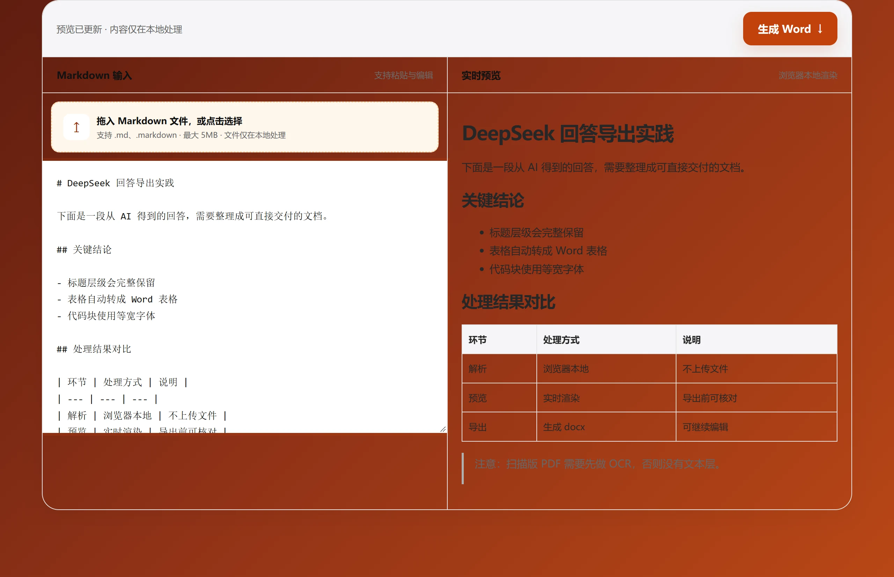

DeepSeek 使用教程
DeepSeek 怎么转 Word？
DeepSeek 的回答通常包含标题、列表和表格。复制 Markdown 内容后，用 Aixuno 即可在浏览器中生成一份结构清晰的 Word 文档。

三步导出 DeepSeek 回答
- 在 DeepSeek 中复制需要保存的回答内容。
- 打开 Aixuno 的 Markdown 转 Word 工具，粘贴内容并检查右侧预览。
- 点击“生成 Word”，下载 `.docx` 文档。
转换在浏览器本地完成，不需要上传文件或创建账号。
适合转换哪些内容？
- 工作周报、会议纪要和项目方案
- 调研报告、竞品分析和产品需求
- 带有标题、清单、引用或表格的 AI 回答
常见问题
DeepSeek 内容可以直接转 Word 吗？
可以。将回答复制到工具中，常见 Markdown 结构会被保留并导出。
转换是否收费？
基础 Markdown 转 Word 功能可以免费使用。
DeepSeek 的回答粘进来是什么样
一次完整回答通常混着三部分：简短结论、大段推理过程、代码或表格。粘进工具之前先想清楚哪部分要进文档——事后删段落，比事后修结构容易得多。
- 需要 Word 里有导航目录，就保留标题层级，别手动删掉井号。
- 文档要给其他人看时，推理过程通常要整段删掉。
- 表格单独检查一遍，它是最容易需要手动调整的元素。
需要提前知道的限制
- 夹在美元符号之间的 LaTeX 会作为普通文字保留，不会变成 Word 公式。
- 代码块保留缩进和换行，但不带语法高亮。
- 推理段落和其他段落一样会被复制进来，不需要就手动删。
几种做法对比
| 做法 | 后续可编辑 | 保留标题层级 | 内容是否离开本机 |
|---|---|---|---|
| 从 DeepSeek 网页直接复制 | 部分可编辑，粘到 Word 后格式丢失 | 不保留 | 否 |
| 截图后用 OCR 转文字 | 可编辑，但存在识别错误 | 不保留 | 取决于用的 OCR 服务 |
| Aixuno Markdown 转 Word | 可编辑 | 保留 | 否，转换在浏览器里完成 |
关于 DeepSeek 输出的问题
推理过程会被一起导出吗？
如果它在复制范围内就会。生成文件前在编辑器里删掉，这部分通常不适合给其他人看。
数学公式能转换吗？
LaTeX 以纯文本保留，不会变成 Word 公式对象。
代码块的格式还在吗？
缩进和换行保留，但不带语法高亮。